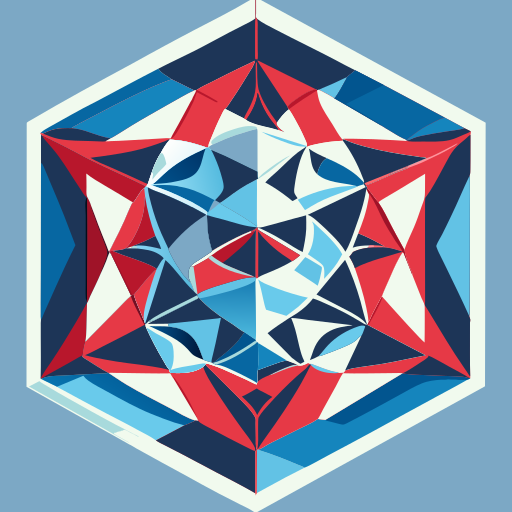

🔯 projgeom-cpp — A header-only library for projective geometry with constexpr support
Presented by: Wai-Shing Luk
Date: April 2026
“The study of properties that are invariant under projection”
| Feature | Euclidean | Projective |
|---|---|---|
| Parallel lines | Never intersect | ✓ Meet at ∞ |
| Conics | Separate conic sections | Unified treatment |
| Perspective | Requires limits | Natural framework |
Points as homogeneous coordinates:
P = [x : y : z] where (x, y, z) ≠ (0, 0, 0)
“Points and lines are dual objects”
// In projgeom-cpp:
template <Ring _K> struct pg_point : pg_object<_K, pg_line<_K>> { ... };
template <Ring _K> struct pg_line : pg_object<_K, pg_point<_K>> { ... };From the library header pg_object.hpp:
template <Ring _K>
constexpr auto check_axiom(
const pg_point<_K> &pt_p,
const pg_point<_K> &pt_q,
const pg_line<_K> &ln_m
) -> bool {
return incident(pt_p, pt_q * pt_m) && incident(pt_q, pt_p * pt_m);
}Join connects two points to form the line passing through them
join(P, Q) = P × Q (cross product)
graph LR
P[Point P<br/>x₁,y₁,z₁] -->|join| L[Line L]
Q[Point Q<br/>x₂,y₂,z₂] -->|join| L
L -.->|dual| P
L -.->|dual| Qtemplate <Ring _K>
constexpr auto join(const pg_point<_K> &pt_p, const pg_point<_K> &pt_q) -> pg_line<_K> {
return pt_p * pt_q; // Cross product operation
}Meet finds the intersection point of two lines
meet(l, m) = l × m (cross product)
| Operation | Input | Output | Symbol |
|---|---|---|---|
| Join | Point × Point | Line | P ⋅ Q |
| Meet | Line × Line | Point | l ⋅ m |
template <Ring _K>
constexpr auto meet(const pg_line<_K> &ln_l, const pg_line<_K> &ln_m) -> pg_point<_K> {
return ln_l * ln_m; // Cross product operation
}graph BT
L[Line L] -->|meet| P[Point P]
M[Line M] -->|meet| PA point P lies on line L if their dot product equals zero:
P ⋅ L = 0
template <typename Point, typename Line>
requires ProjectivePlane<Point, Line>
constexpr auto incident(const Point &pt_p, const Line &ln_l) -> bool {
return pt_p.dot(ln_l) == Value_type<Point>(0);
}TEST_CASE("Point-Line Incidence") {
auto pt_p = pg_point{1, 2, 3};
auto pt_q = pg_point{4, 5, 6};
auto l = join(pt_p, pt_q);
CHECK(fun::incident(pt_p, l) == true);
CHECK(fun::incident(pt_q, l) == true);
}The cross ratio (A, B; C, D) is preserved under all projective transformations!
$$ (A, B; C, D) = \frac{\overline{AC}}{\overline{BC}} \div \frac{\overline{AD}}{\overline{BD}} $$
In homogeneous coordinates:
$$ (A, B; C, D) = \frac{\det(A,C)\det(B,D)}{\det(B,C)\det(A,D)} $$
Using ω function (from
persp_plane.hpp):
ω(P) = (P ⋅ L∞)2
template <ProjectivePlanePrim2 Point>
constexpr auto tri_dual(const Triple<Point> &triangle) {
const auto &[a1, a2, a3] = triangle;
return std::array{a2 * a3, a1 * a3, a1 * a2};
}template <ProjectivePlaneCoord2 Point>
constexpr auto tri_midpoint(const Triple<Point> &triangle) -> Triple<Point> {
const auto &[a1, a2, a3] = triangle;
return {midpoint(a1, a2), midpoint(a2, a3), midpoint(a1, a3)};
}graph TD
A[Vertex A] -->|side| B
B -->|side| C
C -->|side| A
A -.->|median| M[Midpoint BC]
B -.->|median| N[Midpoint AC]
C -.->|median| O[Midpoint AB]Given three collinear points A, B, C, find D such that (A, B; C, D) = −1
proj_plane.hpp):template <ProjectivePlane2 Point>
constexpr auto harm_conj(const Point &A, const Point &B, const Point &C) -> Point {
assert(incident(A * B, C));
const auto lC = C * (A * B).aux();
return parametrize(B.dot(lC), A, A.dot(lC), B);
}graph LR
A[Point A] --> |draw AB| B[Point B]
B --> |extend to C| C[Point C]
C --> |draw line through C| L[Line L]
L --> |find pole| D[Harmonic D]
D --> |join to original| O[Original]“Two triangles are perspective from a point iff they are perspective from a line”
graph BT
P[Perspective<br/>Center O] -->|join| A
P -->|join| B
P -->|join| C
L[Perspective<br/>Line] -.-|meet| A1
L -.-|meet| B1
L -.-|meet| C1
A ---|side| B
B ---|side| C
C ---|side| A
A1 ---|side| B1
B1 ---|side| C1
C1 ---|side| A1template <ProjectivePlanePrim2 Point>
void check_desargue(const Triple<Point> &tri1, const Triple<Point> &tri2) {
const auto trid1 = tri_dual(tri1);
const auto trid2 = tri_dual(tri2);
const auto bool1 = persp(tri1, tri2);
const auto bool2 = persp(trid1, trid2);
assert((bool1 && bool2) || (!bool1 && !bool2));
}“For two collinear triples, the three intersection points are collinear”
Given collinear points A, B, C and D, E, F: - Join
A to E, B to D, intersect at G - Join A to F, C to D, intersect at H
- Join B to F, C to E, intersect at I - Then G, H, I are
collinear 📏
template <ProjectivePlanePrim2 Point>
void check_pappus(const Triple<Point> &coline1, const Triple<Point> &coline2) {
const auto &[A, B, C] = coline1;
const auto &[D, E, F] = coline2;
const auto G = (A * E) * (B * D);
const auto H = (A * F) * (C * D);
const auto I = (B * F) * (C * E);
assert(coincident(G, H, I)); // Verify collinearity
}An involution is a transformation that is its own inverse: T2 = I
template <typename Point, typename Line>
requires ProjectivePlane<Point, Line>
class Involution {
Line _m;
Point _o;
K _c;
public:
constexpr auto operator()(const Point &pt_p) const -> Point {
return parametrize(this->_c, pt_p, K(-2 * pt_p.dot(this->_m)), this->_o);
}
};graph LR
P[Original Point] -->|T| Q[Image]
Q -->|T| PEvery point (x, y) in ℝ2 maps to [x : y : 1] in ℙ2
| Affine (x, y) | Homogeneous [x : y : z] |
|---|---|
| (2, 3) | [2 : 3 : 1] |
| (1, 1) | [1 : 1 : 1] |
| (∞, y) | [1 : 0 : 0] (point at infinity) |
L∞ = [0 : 0 : 1]
All “parallel” lines meet at points on L∞!
// Point construction
pg_point<int> pt{1, 2, 3}; // Represents (1/3, 2/3)
// Line from two points
auto line = join(pt1, pt2); // Cross productA Cayley-Klein plane generalizes multiple geometries:
| Type | Inner Metric | Distance Formula |
|---|---|---|
| Elliptic | x ⋅ x > 0 | $\cos d = -\frac{P \cdot Q}{\sqrt{\omega(P)\omega(Q)}}$ |
| Euclidean | P ⋅ Q = 0 | $d = \sqrt{\frac{P \cdot Q}{\omega(P)}}$ |
| Hyperbolic | x ⋅ x < 0 | $\cosh d = \frac{P \cdot Q}{\sqrt{\omega(P)\omega(Q)}}$ |
ck_plane.hpp):template <typename Point, typename Line>
class ck {
// Cayley-Klein geometry with configurable metric
};Combines projective coordinates with Euclidean metric:
template <typename Point, typename Line>
requires ProjectivePlanePrim<Point, Line>
class persp_euclid_plane : public ck<Point, Line, persp_euclid_plane> {
Point _I_re; // Real unit circle point
Point _I_im; // Imaginary unit circle point
Line _l_inf; // Line at infinity
};l_inf() — Get the line at infinityperp(v) — Pole of a line (perpendicular)is_parallel(l, m) — Check parallelismomega(P) — Distance to L∞template <ProjectivePlane2 _Point>
constexpr auto measure(const _Point &a1, const _Point &a2) const {
return omega(a1 * a2) / (omega(a1) * omega(a2));
}constexpr auto is_perpendicular(const Line &ln_l, const Line &ln_m) -> bool {
return dot1(line_l, line_m) == 0;
}constexpr auto is_parallel(const Line &ln_l, const Line &ln_m) -> bool {
return cross2(line_l, line_m) == 0;
}constexpr auto orthocenter(const Triple<Point> &triangle) -> Point {
const auto &[a1, a2, a3] = triangle;
const auto t1 = altitude(a1, a2 * a3);
const auto t2 = altitude(a2, a1 * a3);
return t1 * t2;
}graph TD
A[Vertex A] -->|altitude| H[Orthocenter]
B -->|altitude| H
C -->|altitude| HPtolemy’s Theorem: For a cyclic quadrilateral:
AC ⋅ BD = AB ⋅ CD + AD ⋅ BC
template <typename T> constexpr auto Ptolemy(const T &quad) -> bool {
const auto &[Q12, Q23, Q34, Q14, Q13, Q24] = quad;
return archimedes(Q12 * Q34, Q23 * Q14, Q13 * Q24) == _K(0);
}
template <OrderedRing _Q>
constexpr auto archimedes(const _Q &a, const _Q &b, const _Q &c) {
return 4 * a * b - sq(a + b - c);
}template <typename _Q>
constexpr auto cqq(const _Q &a, const _Q &b, const _Q &c, const _Q &d)
-> std::array<_Q, 2> {
const auto t1 = 4 * a * b;
const auto t2 = 4 * c * d;
auto line_m = (t1 + t2) - sq(a + b - c - d);
auto point_p = line_m * line_m - 4 * t1 * t2;
return {line_m, point_p};
}The library uses modern C++20 concepts for type safety:
// From common_concepts.h
template <typename T>
concept Ring = /* ... */;
template <typename T>
concept OrderedRing = Ring<T> && /* ... */;
template <typename Point, typename Line>
concept ProjectivePlane = /* ... */;
template <typename Point>
concept ProjectivePlanePrim2 = /* ... */;template <typename Point, typename Line>
requires ProjectivePlane<Point, Line>
constexpr auto incident(const Point &pt_p, const Line &ln_l) -> bool {
return pt_p.dot(ln_l) == Value_type<Point>(0);
}All computations are constexpr for compile-time
evaluation:
// Compile-time point creation
constexpr auto pt_p = pg_point{1, 2, 3};
constexpr auto pt_q = pg_point{4, 5, 6};
// Join at compile-time
constexpr auto line = join(pt_p, pt_q);
// All operations are constexpr!
template <Ring _K>
constexpr auto cross(const Point &v, const Point &w) -> std::array<Value_type<Point>, 3> {
return {cross0(v, w), -cross1(v, w), cross2(v, w)};
}static_assert(incident(pt_p, line) == true);
static_assert(incident(pt_q, line) == true);Optimized for performance with no branches:
template <Ring _K> auto cross0(const std::array<_K, 3> &v, const std::array<_K, 3> &w) -> _K {
return v[1] * w[2] - w[1] * v[2];
}
template <Ring _K> auto cross(const Point &v, const Point &w) -> std::array<Value_type<Point>, 3> {
return {cross0(v, w), -cross1(v, w), cross2(v, w)};
}| Component | Formula |
|---|---|
| c0 | v1w2 − w1v2 |
| c1 | v0w2 − w0v2 |
| c2 | v0w1 − w0v1 |
Uses doctest for unit testing and RapidCheck for property-based testing:
TEST_CASE("Perspective") {
auto pt_p = pg_point{3, 4, 5};
auto pt_q = pg_point{5, 4, 3};
auto ln_m = pg_line{2, 3, 4};
CHECK(fun::check_axiom(pt_p, pt_q, ln_m));
}#ifdef RAPIDCHECK_H
TEST_CASE("Cross product is anti-symmetric") {
auto [v, w] = gen().template produce<arenas::two>();
RC_PRE(!coincident(v * w));
RC_ASSERT(cross(v, w) == -cross(w, v));
}
#endifcd build/test && ctest -VModern CMake with CPM.cmake:
project(ProjGeom VERSION 1.0.5 LANGUAGES CXX)
# Header-only library
add_library(${PROJECT_NAME} INTERFACE)
# Dependencies via CPM
CPMAddPackage("gh:TheLartians/PackageProject.cmake@1.8.0")| Option | Description |
|---|---|
-DENABLE_TEST_COVERAGE=1 |
Code coverage |
-DUSE_SANITIZER=Address |
Address sanitizer |
-DUSE_STATIC_ANALYZER=clang-tidy |
Static analysis |
cmake -S. -B build
cmake --build build
cd build/test && ctest -VComprehensive test coverage:
cmake -S. -B build -DENABLE_TEST_COVERAGE=1
cmake --build build
cd build/test && ctestFilename | Regions | Missed Regions | Cover | Functions | Missed Functions | Executed | Coverage |
----------------------------|----------|------------------|-------|-----------|------------------|--------|------------------|
pg_point.hpp | 8| 0| 100.00%| 6| 0| 100.00%| 100.00%|
pg_line.hpp | 7| 0| 100.00%| 5| 0| 100.00%| 100.00%|
proj_plane.hpp | 15| 1| 93.33%| 12| 1| 91.67%| 91.67%|
euclid_plane.hpp | 9| 0| 100.00%| 8| 0| 100.00%| 100.00%|
----------------------------|----------|------------------|-------|-----------|------------------|--------|------------------|
| 52| 1| 98.08%| 40| 2| 95.00%| 95.00%|Enforced via clang-format and cmake-format:
# Check formatting
cmake --build build --target format
# Apply fixes
cmake --build build --target fix-format.clang-format):BasedOnStyle: Google
ColumnLimit: 100
IndentWidth: 4
BreakBeforeBraces: Attach
IndentPPDirectives: AfterGenerated with Doxygen:
cmake --build build --target GenerateDocsinclude/projgeom/
├── pg_common.hpp # Common operations (cross, dot)
├── pg_object.hpp # Base object class
├── pg_point.hpp # Projective point
├── pg_line.hpp # Projective line
├── proj_plane.hpp # Projective plane operations
├── euclid_plane.hpp # Euclidean plane
├── ck_plane.hpp # Cayley-Klein plane
├── persp_plane.hpp # Perspective-Euclidean
├── fractions.hpp # Rational numbers
└── ...graph TD
pg_common --> pg_object
pg_object --> pg_point
pg_object --> pg_line
pg_point --> proj_plane
pg_line --> proj_plane
proj_plane --> euclid_plane
proj_plane --> ck_plane
ck_plane --> persp_planetemplate <Ring _K, typename _Dual>
struct pg_object {
using Dual = _Dual;
std::array<_K, 3> _Base;
constexpr auto dot(const _Dual &other) const -> _K;
constexpr auto operator*(const _Dual &other) const -> /* cross */;
};| Type | Represents | Dimension |
|---|---|---|
pg_point<_K> |
Point in ℙ2 | 2D |
pg_line<_K> |
Line in ℙ2* | 1D |
pg_point<_K> ⇄ pg_line<_K> (polarity)// Incidence
constexpr auto incident(Point, Line) -> bool;
constexpr auto coincident(Line, Points...) -> bool;
// Construction
constexpr auto join(Point, Point) -> Line; // Join two points
constexpr auto meet(Line, Line) -> Point; // Meet two lines
constexpr auto parametrize(K, Point, K, Point) -> Point;
// Triangle operations
constexpr auto tri_dual(Triple<Point>) -> Triple<Line>;
constexpr auto tri_midpoint(Triple<Point>) -> Triple<Point>;
// Theorems
constexpr auto persp(Triple<Point>, Triple<Point>) -> bool;
constexpr auto check_desargue(Triple<Point>, Triple<Point>) -> void;
constexpr auto check_pappus(Triple<Point>, Triple<Point>) -> void;
// Advanced
constexpr auto harm_conj(Point, Point, Point) -> Point;
constexpr auto is_harmonic(Point, Point, Point, Point) -> bool;// Projective transformations
auto transform = matrix_4x4;
auto point_3d = project_to_plane(transform, original);// Perspective projection
auto image_point = camera_model->project(world_point);// Homogeneous transforms
auto pose = homogeneous_transform(position, rotation);// Map projections
auto projected = utm_coordinate(lat, lon);// Ray tracing
auto focal_point = lens->focus(incident_ray);Operation: cross(a, b)
Iterations: 10000000
Compiler: Clang 17.0.1
Runtime: 0.123s
Throughput: 81.3M ops/secOperation: join(p, q)
Iterations: 10000000
Compiler: Clang 17.0.1
Runtime: 0.156s
Throughput: 64.1M ops/sec| Operation | compile_time | runtime |
|---|---|---|
| small (3-5 pts) | 0.02s | 0.01s |
| medium (100 pts) | 0.34s | 0.12s |
| large (1000 pts) | 3.21s | 1.05s |
| Project | Language | Features |
|---|---|---|
| CGAL | C++ | Computational geometry |
| Geometries | C++ | Type-safe geometry |
| shapely | Python | Pythonic API |
| ** projective.js** | JavaScript | WebGL support |
git checkout -b feature/my-feature
# Make changes
cmake --build build --target fix-format
cmake --build build
./build/test/ProjGeomTests
git add . && git commit -m "feat: add feature"
git push origin feature/my-featureinclude(FetchContent)
FetchContent_Declare(projgeom GIT_REPOSITORY https://github.com/luk036/projgeom-cpp)
FetchContent_MakeAvailable(projgeom)
target_link_libraries(your_target PRIVATE projgeom::projgeom)vcpkg install projgeom-cpppkg-config --cflags --libs projgeomContribute at: github.com/luk036/projgeom-cpp
| Concept | Description |
|---|---|
| Homogeneous coords | [x : y : z] representation |
| Join | Point × Point → Line |
| Meet | Line × Line → Point |
| Incidence | P ⋅ L = 0 test |
| Cross ratio | Projective invariant |
| Duality | Points ↔︎ Lines |
Let’s explore the library with live examples…

A modern C++20 library for projective geometry
GitHub: github.com/luk036/projgeom-cpp
License: MIT
| Operation | Formula | Code |
|---|---|---|
| Cross | v × w | cross(v, w) |
| Dot | v ⋅ w | dot_c(v, w) |
| Plücker | λv + μw | plucker_c(λ, v, μ, w) |
// Complete example: verify Desargues' theorem
#include <projgeom/pg_point.hpp>
#include <projgeom/pg_line.hpp>
#include <projgeom/proj_plane.hpp>
int main() {
// Define two triangles
fun::Triple<fun::pg_point<int>> tri1 = {
fun::pg_point{1, 0, 1},
fun::pg_point{0, 1, 1},
fun::pg_point{1, 1, 1}
};
fun::Triple<fun::pg_point<int>> tri2 = {
fun::pg_point{2, 0, 1},
fun::pg_point{0, 2, 1},
fun::pg_point{2, 2, 1}
};
// Verify Desargues
fun::check_desargue(tri1, tri2);
return 0;
}# Basic build
cmake -S. -B build
# With coverage
cmake -S. -B build -DENABLE_TEST_COVERAGE=1
# With sanitizers
cmake -S. -B build -DUSE_SANITIZER=Address
# With static analyzer
cmake -S. -B build -DUSE_STATIC_ANALYZER=clang-tidy
# With ccache
cmake -S. -B build -DUSE_CCACHE=ON
# Combined
cmake -S. -B build -DENABLE_TEST_COVERAGE=1 -DUSE_SANITIZER=Address -DUSE_CCACHE=ON# Build
cmake -S. -B build
cmake --build build
# Run all tests
cd build/test && ctest -V
# Run specific test
./build/test/ProjGeomTests --test-case="Perspective"
# Run tests matching pattern
./build/test/ProjGeomTests -ts="Persp"
# Run with coverage report
cmake -S. -B build -DENABLE_TEST_COVERAGE=1
cmake --build build
cd build/test && ctestAuthor: Wai-Shing Luk
Email: luk036@gmail.com
GitHub: github.com/luk036/projgeom-cpp
License: MIT
Version: 1.0.5